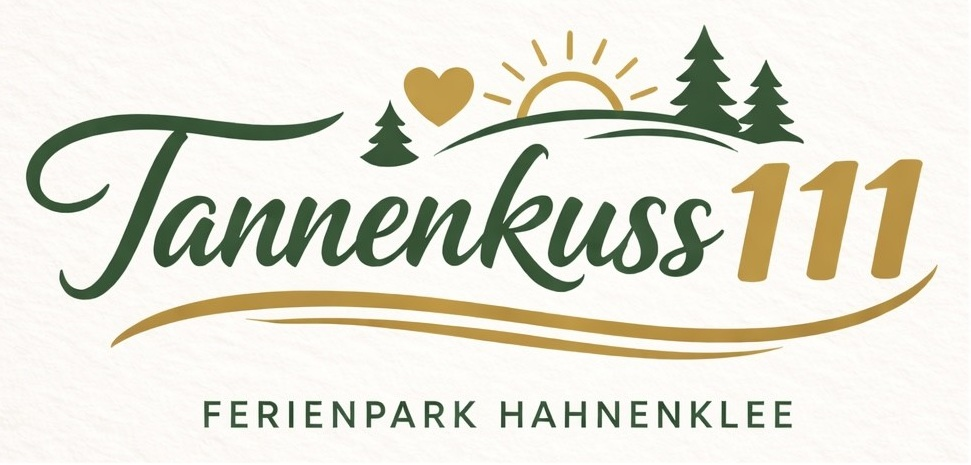

Die Ferienwohnung Tannenkuss111 liegt im beliebten Ferienpark Hahnenklee im schönen Harz.
Mit direktem Zugang zum Bocksberg, ruhiger Waldlage und zahlreichen Wanderwegen ist sie ideal für Paare, Familien und Kurzurlauber, die Erholung und Natur suchen.
Moderne Ausstattung, liebevolle Details und die perfekte Lage machen Tannenkuss111 zu einem besonderen Rückzugsort im Harz.
BUCHBAR AB
SOMMER 2026!!!